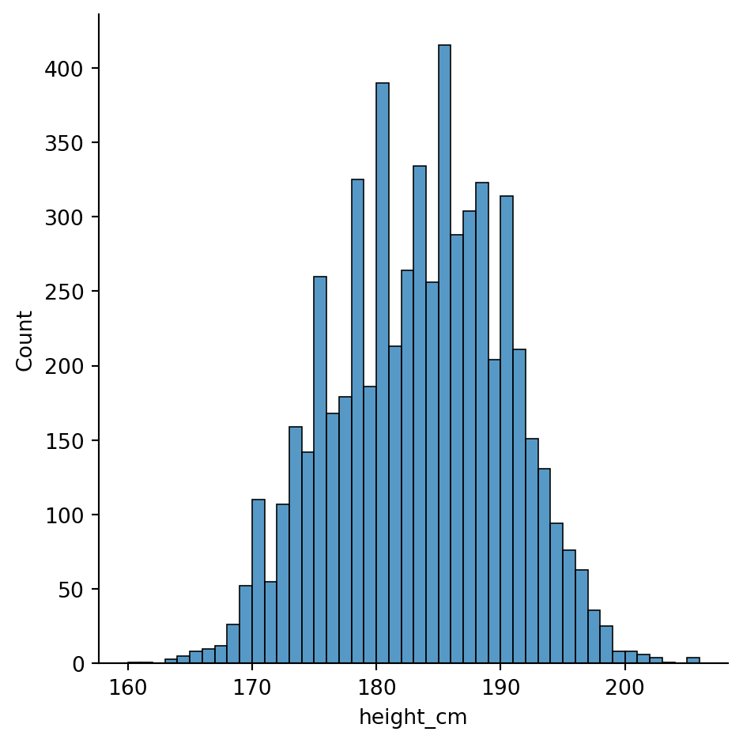
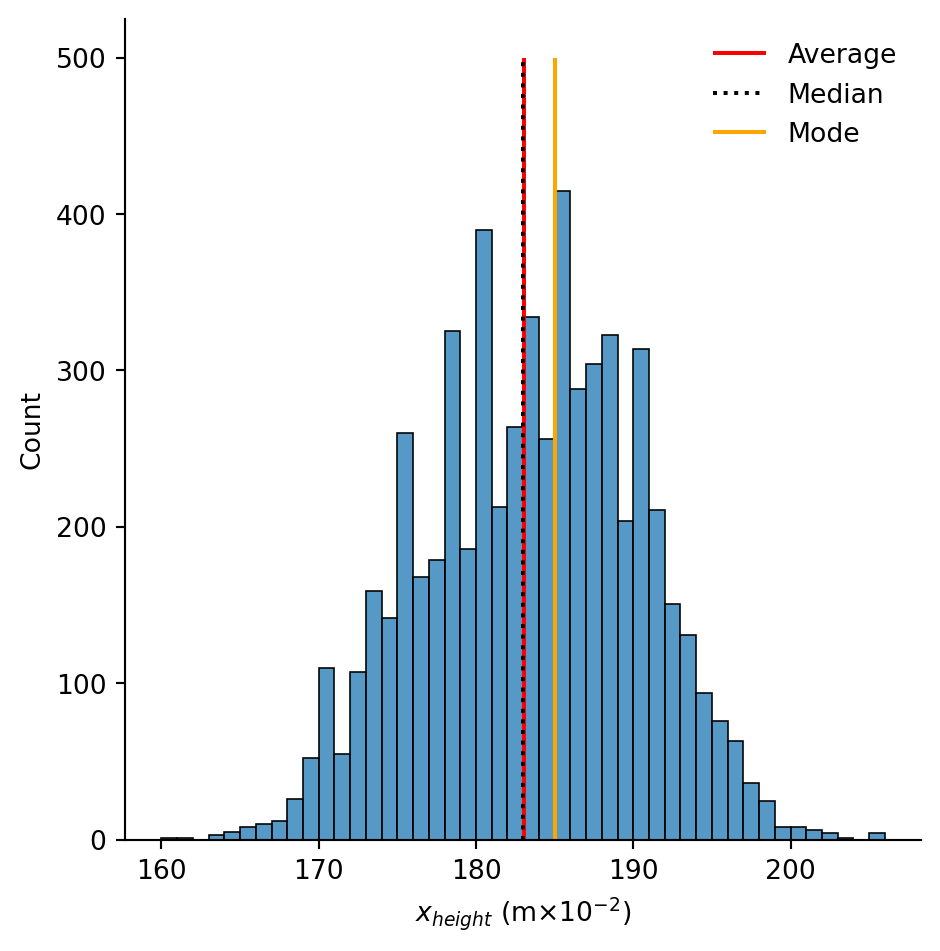
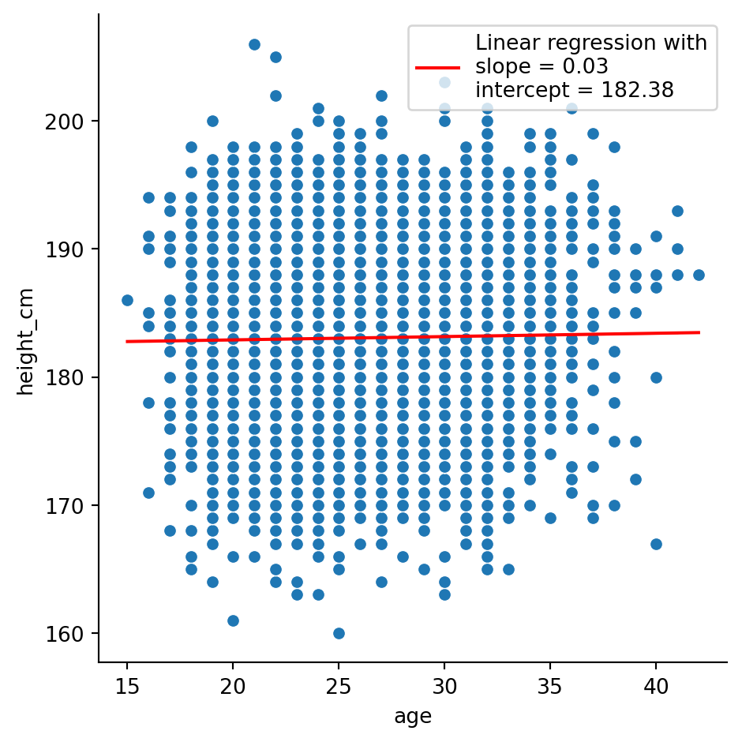
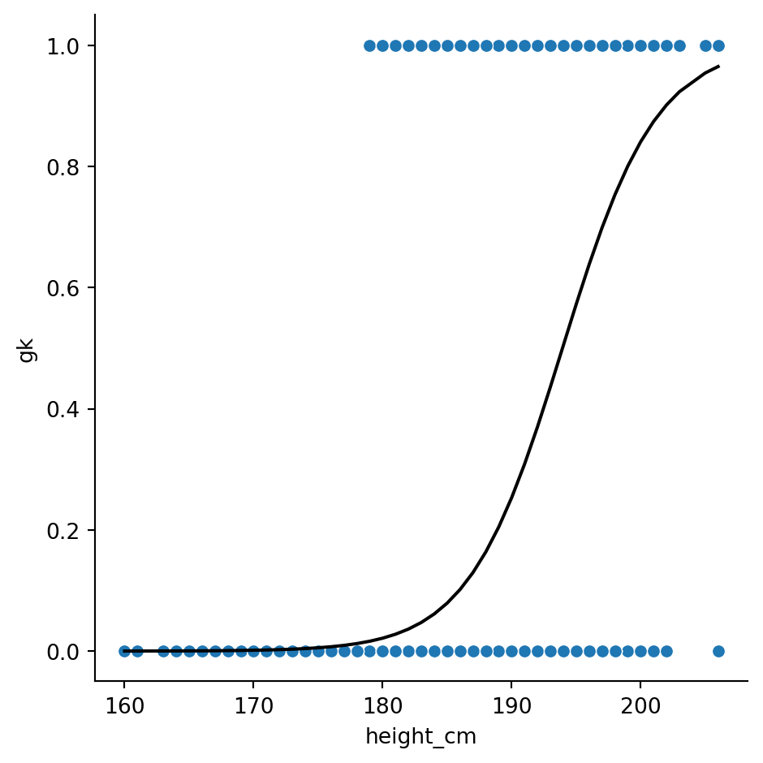

import matplotlib.pyplot as plt
import pandas as pd
import scipy.stats as stats
import seaborn as sns
import statsmodels.formula.api as smfPython training (4 of 4): Statistics and Further Visualisation
TipUpcoming workshop(s) available!
The next workshop is on Fri Mar 20 at 09:30 AM.
Book in to the next offering now.
Alternatively, check our calendar for future events.
This session is aimed as an overview of how to perform some statistical modelling with Python. It is a Python workshop, not a statistics workshop - if you’d like to better understand the statistical models, or need help deciding what’s best for you, please consult a statistics resource or contact a statistician.
In this session, we’ll cover
- Descriptive statistics
- Measures of central tendancy
- Measures of variability
- Measures of correlation
- Inferential statistics
- Linear regressions
- T-tests
- \(\chi^2\) tests
- Generalised regressions
- Visualising statistics
- Adding lines to graphs to indicate bounds
- Shading regions
- Subplots
- Boxplots
We’ll use two new modules:
scipy.statsstatsmodels
Setup
Spyder version
Before we begin, please check which version of Spyder you’re using (you can see this in the Anaconda Navigator, or in Help > About Spyder). If it’s less than 6, you should update Spyder before continuing. However, if you’re in a workshop, this will take too long - instead, use the following workaround if your plots don’t work:
plt.show()Modules and data
Let’s import all our modules for today:
We’ll be working from our “Players2024” dataset again. If you don’t have it yet,
- Download the dataset.
- Create a folder in in the same location as your script called “data”.
- Save the dataset there.
To bring it in and clean it up,
df = pd.read_csv("data/Players2024.csv")
df = df[df["positions"] != "Missing"]
df = df[df["height_cm"] > 100]Descriptive Statistics
We’ll start with sample size. All dataframes have most descriptive statistics functions available right off the bat which we access via the . operator.
To calculate the number of non-empty observations in a column, say the numeric variable df["height_cm"], we use the .count() method
df["height_cm"].count()np.int64(5932)Measures of central tendancy
We can compute measures of central tendancy similarly. The average value is given by
df["height_cm"].mean()np.float64(183.04130141604855)the median by
df["height_cm"].median()np.float64(183.0)and the mode by
df["height_cm"].mode()0 185.0
Name: height_cm, dtype: float64
.mode()returns a dataframe with the most frequent values as there can be multiple.
Visualisation
Let’s visualise our statistics as we go. We can start by producing a histogram of the heights with seaborn:
sns.displot(df, x = "height_cm", binwidth = 1)
WarningIf your plots don’t appear…
…AND you don’t have an error, then you might have a Spyder version with a bug.
The simplest workaround is to run plt.show() every time you make a plot. If you have time, you should update Spyder.
We can use matplotlib to annotate the locations of these statistics. Let’s save them into variables and then make the plot again. The important function is plt.vlines, which enables you to create vertical line(s) on your plot. We’ll do it once for each so that we get separate legend entries. We’ll need to provide the parameters
x =ymin =ymax =colors =linestyles =label =
# Save the statistics
height_avg = df["height_cm"].mean()
height_med = df["height_cm"].median()
height_mod = df["height_cm"].mode()
# Make the histogram
sns.displot(df, x = "height_cm", binwidth = 1)
# Annotate the plot with vertical and horizontal lines
plt.vlines(x = height_avg, ymin = 0, ymax = 500, colors = "r", linestyles = "dashed", label = "Average")
plt.vlines(x = height_med, ymin = 0, ymax = 500, colors = "k", linestyles = "dotted", label = "Median")
plt.vlines(x = height_mod, ymin = 0, ymax = 500, colors = "orange", linestyles = "solid", label = "Mode")
# Create the legend with the labels
plt.legend()Activity 1: Measures of Central Tendency
Let’s extend this visualisation to include the median and mode, as well as change the median’s linestyle to be “dotted”.
- Visualise the median and mode, like the average, with different colours.
- Go to the documentation for
plt.vlines()to change the median’s linestyle.
Then, try to use
plt.legend()to remove the border on the legend.plt.xlabel()to clean up the \(x\)-label.
NoteSolution
The following code is one possible solution.
# Save the statistics
height_avg = df["height_cm"].mean()
height_med = df["height_cm"].median()
height_mod = df["height_cm"].mode()
# Make the histogram
sns.displot(df, x = "height_cm", binwidth = 1)
# Annotate the plot with vertical and horizontal lines
plt.vlines(x = height_avg, ymin = 0, ymax = 500, colors = "r", label = "Average")
plt.vlines(x = height_med, ymin = 0, ymax = 500, colors = "k", linestyles = "dotted", label = "Median")
plt.vlines(x = height_mod, ymin = 0, ymax = 500, colors = "orange", label = "Mode")
# Create the legend with the labels
plt.legend(frameon = False)
plt.xlabel("Height (cm)")Text(0.5, 9.066666666666652, 'Height (cm)')
TipIncluding mathematical symbols with \(\LaTeX\).
You can tell matplotlib to execute certain \(\LaTeX\) commands in the text you plot, enabling inclusion of mathematics in your plots. This is particularly useful for certain units.
Let’s imagine we want to use \(x_{height}\) for the \(x\)-label. Using dollar signs,
plt.xlabel("$x_{height}$ (cm)")# Save the statistics
height_avg = df["height_cm"].mean()
height_med = df["height_cm"].median()
height_mod = df["height_cm"].mode()
# Make the histogram
sns.displot(df, x = "height_cm", binwidth = 1)
# Annotate the plot with vertical and horizontal lines
plt.vlines(x = height_avg, ymin = 0, ymax = 500, colors = "r", label = "Average")
plt.vlines(x = height_med, ymin = 0, ymax = 500, colors = "k", linestyles = "dotted", label = "Median")
plt.vlines(x = height_mod, ymin = 0, ymax = 500, colors = "orange", label = "Mode")
# Create the legend with the labels
plt.legend(frameon = False)
plt.xlabel("$x_{height}$ (cm)")Text(0.5, 9.066666666666652, '$x_{height}$ (cm)')\(\LaTeX\) commands use backslashes \, and sometimes this conflicts with Python string’s escape characters. To avoid this, prefix your conflicting strings with R, as in
plt.xlabel(R"$x_{height}$ (m$\times 10^{-2}$)")# Save the statistics
height_avg = df["height_cm"].mean()
height_med = df["height_cm"].median()
height_mod = df["height_cm"].mode()
# Make the histogram
sns.displot(df, x = "height_cm", binwidth = 1)
# Annotate the plot with vertical and horizontal lines
plt.vlines(x = height_avg, ymin = 0, ymax = 500, colors = "r", label = "Average")
plt.vlines(x = height_med, ymin = 0, ymax = 500, colors = "k", linestyles = "dotted", label = "Median")
plt.vlines(x = height_mod, ymin = 0, ymax = 500, colors = "orange", label = "Mode")
# Create the legend with the labels
plt.legend(frameon = False)
plt.xlabel(R"$x_{height}$ (m$\times 10^{-2}$)")Text(0.5, 9.066666666666652, '$x_{height}$ (m$\\times 10^{-2}$)')
Measures of variance
We can also compute measures of variance. The minimum and maximum are as expected
df["height_cm"].min()
df["height_cm"].max()np.float64(206.0)The range is the difference
df["height_cm"].max() - df["height_cm"].min()np.float64(46.0)Quantiles are given by .quantile(...) with the fraction inside. The inter-quartile range (IQR) is the difference between 25% and 75%.
q1 = df["height_cm"].quantile(0.25)
q3 = df["height_cm"].quantile(0.75)
IQR = q3 - q1A column’s standard deviation and variance are given by
df["height_cm"].std()
df["height_cm"].var()np.float64(46.7683158241558)And the standard error of the mean (SEM) with
df["height_cm"].sem()np.float64(0.08879229764682213)You can calculate the skewness and kurtosis (variation of tails) of a sample with
df["height_cm"].skew()
df["height_cm"].kurt()np.float64(-0.4338044567190438)All together, you can see a nice statistical summary with
df["height_cm"].describe()count 5932.000000
mean 183.041301
std 6.838736
min 160.000000
25% 178.000000
50% 183.000000
75% 188.000000
max 206.000000
Name: height_cm, dtype: float64Activity 2: Inter-quartile range
Let’s take our previous visualisation and shade in the IQR using the function plt.fill_between(). You’ll want to complete this activity in a few steps:
- Copy the code from the previous plot
- Save the quartiles Q1 and Q3 in variables
- Read the documentation for
plt.fill_between() - Try to use it.
You’ll first want to use the function with the following parameters
x =y1 =y2 =
i.e.,
plt.fill_between(x = ..., y1 = ..., y2 = ...)Once you’ve got it working, try adding the following two - alpha = (for the opacity, a number between 0-1) - label = (for the legend)
TipHint
The documentation for plt.fill_between() specifies that
xshould be array-like. For us, this means alist.y1andy2should be array-like or float. This means either alistor a single decminal number.
NoteSolution
The following code is one possible solution.
# Save the quartiles
height_Q1 = df["height_cm"].quantile(0.25)
height_Q3 = df["height_cm"].quantile(0.75)
# Shade in the IQR
plt.fill_between(x = [height_Q1, height_Q3], y1 = 0, y2 = 500, alpha = 0.2, label = "IQR")All together with the original plot, this looks like
# Save the statistics
height_tot = df["height_cm"].count()
height_avg = df["height_cm"].mean()
height_med = df["height_cm"].median()
height_mod = df["height_cm"].mode()
# Save the quartiles
height_Q1 = df["height_cm"].quantile(0.25)
height_Q3 = df["height_cm"].quantile(0.75)
# Make the histogram
sns.displot(df, x = "height_cm", binwidth = 1)
# Annotate the plot with vertical and horizontal lines
plt.vlines(x = height_avg, ymin = 0, ymax = 500, colors = "r", linestyles = "dashed", label = "Average")
plt.vlines(x = height_med, ymin = 0, ymax = 500, colors = "k", linestyles = "dotted", label = "Median")
plt.vlines(x = height_mod, ymin = 0, ymax = 500, colors = "orange", linestyles = "solid", label = "Mode")
# Shade in the IQR
plt.fill_between(x = [height_Q1, height_Q3], y1 = 0, y2 = 500, alpha = 0.2, label = "IQR")
# Create the legend with the labels
plt.legend()Inferential Statistics
Inferential statistics requires using the module scipy.stats.
Simple linear regressions
Least-squares regression for two sets of measurements can be performed with the function stats.linregress()”
stats.linregress(x = df["age"], y = df["height_cm"])LinregressResult(slope=np.float64(0.025827494764561896), intercept=np.float64(182.38260451315895), rvalue=np.float64(0.01682597901197298), pvalue=np.float64(0.19506275453364344), stderr=np.float64(0.019930266529602007), intercept_stderr=np.float64(0.5159919571772644))If we store this as a variable, we can access the different values with the . operator. For example, the p-value is
lm = stats.linregress(x = df["age"], y = df["height_cm"])
lm.pvaluenp.float64(0.19506275453364344)Visualisation
Let’s look at implementing the linear regression into our scatter plot from before. Using the scatterplot from before,
sns.relplot(df, x = "age", y = "height_cm")
we’ll need to plot the regression as a line. For reference,
\[ y = \text{slope}\times x + \text{intercept}\]
So
sns.relplot(df, x = "age", y = "height_cm")
# Construct the linear regression
x_lm = df["age"]
y_lm = lm.slope*x_lm + lm.intercept
# Plot the line plot
sns.lineplot(x = x_lm, y = y_lm, color = "r")Finally, we can include the details of the linear regression in the legend by specifying them in the label. We’ll need to round() them and str() them (turn them into strings) so that we can include them in the message.
sns.relplot(df, x = "age", y = "height_cm")
# Construct the linear regression
x_lm = df["age"]
y_lm = lm.slope*x_lm + lm.intercept
# Round and stringify the values
slope_rounded = str(round(lm.slope, 2))
intercept_rounded = str(round(lm.intercept, 2))
# Plot the line plot
linreg_label = "Linear regression with\nslope = " + slope_rounded + "\nintercept = " + intercept_rounded
sns.lineplot(x = x_lm, y = y_lm, color = "r", label = linreg_label)
\(t\)-tests
We can also perform \(t\)-tests with the scipy.stats module. Typically, this is performed to examine the statistical signficance of a difference between two samples’ means. Let’s examine whether that earlier groupby result for is accurate for heights, specifically, are goalkeepers taller than non-goalkeepers?
The function stats.ttest_ind() requires us to send in the two groups as separate columns, so we’ll need to do a bit of reshaping.
Let’s start by creating a new variable for goalkeeper status, and then separate the goalkeepers from the non-goalkeepers in two variables
df["gk"] = df["positions"] == "Goalkeeper"
goalkeepers = df[df["gk"] == True]
non_goalkeepers = df[df["gk"] == False]The \(t\)-test for the means of two independent samples is given by
stats.ttest_ind(goalkeepers["height_cm"], non_goalkeepers["height_cm"])TtestResult(statistic=np.float64(35.2144964816995), pvalue=np.float64(7.551647917141636e-247), df=np.float64(5930.0))Yielding a p-value of \(8\times 10^{-247}\approx 0\), indicating that the null-hypothesis (heights are the same) is extremely unlikely.
Activity 2: Visualisation
We can also visualise these results with boxplots, showing the distributions and their statistical summary. Go to the seaborn documentation for sns.catplot() to try figure out how.
NoteSolution
sns.catplot(df, x = "gk", y = "height_cm", kind = "box")More complex modelling
If you need to do more advanced statistics, particularly if you need more regressions, you’ll likely need to turn to a different package: statsmodels. It is particularly useful for statistical modelling.
We’ll go through three examples
- Simple linear regressions (like before)
- Multiple linear regressions
- Logistic regressions
What’s nice about statsmodels is that it gives an R-like interface and summaries.
Simple linear regressions revisited
Let’s perform the same linear regression as before, looking at the “age” and “height variables”. Our thinking is that players’ heights dictate how long they can play, so we’ll make \(x = \text{height}\) and \(y = \text{age}\).
The first step is to make the set up the variables. We’ll use the function smf.ols() for ordinary least squares. It takes in two imputs:
- The formula string, in the form
y ~ X1 + X2 ... - The data
We create the model and compute the fit
mod = smf.ols("height_cm ~ age", df)
res = mod.fit()Done! Let’s take a look at the results
res.summary()| Dep. Variable: | height_cm | R-squared: | 0.000 |
|---|---|---|---|
| Model: | OLS | Adj. R-squared: | 0.000 |
| Method: | Least Squares | F-statistic: | 1.679 |
| Date: | Wed, 21 Jan 2026 | Prob (F-statistic): | 0.195 |
| Time: | 03:16:35 | Log-Likelihood: | -19821. |
| No. Observations: | 5932 | AIC: | 3.965e+04 |
| Df Residuals: | 5930 | BIC: | 3.966e+04 |
| Df Model: | 1 | ||
| Covariance Type: | nonrobust |
| coef | std err | t | P>|t| | [0.025 | 0.975] | |
|---|---|---|---|---|---|---|
| Intercept | 182.3826 | 0.516 | 353.460 | 0.000 | 181.371 | 183.394 |
| age | 0.0258 | 0.020 | 1.296 | 0.195 | -0.013 | 0.065 |
| Omnibus: | 86.537 | Durbin-Watson: | 1.995 |
|---|---|---|---|
| Prob(Omnibus): | 0.000 | Jarque-Bera (JB): | 56.098 |
| Skew: | -0.098 | Prob(JB): | 6.58e-13 |
| Kurtosis: | 2.566 | Cond. No. | 151. |
Notes:
[1] Standard Errors assume that the covariance matrix of the errors is correctly specified.
That’s a lot nicer than with scipy. We can also make our plot from before by getting the model’s \(y\) values with res.fittedvalues
sns.relplot(data = df, x = "age", y = "height_cm")
sns.lineplot(x = df["age"], y = res.fittedvalues, color = "r")Generalised linear models
The statsmodels module has lots of advanced statistical models available. We’ll take a look at one more: Generalised Linear Models. The distributions they include are
- Binomial
- Poisson
- Negative Binomial
- Gaussian (Normal)
- Gamma
- Inverse Gaussian
- Tweedie
We’ll use the binomial option to create logistic regressions.
Logistic regressions examine the distribution of binary data. For us, we can compare the heights of goalkeepers vs non-goalkeepers again. Let’s convert our gk column from True \(\rightarrow\) 1 and False \(\rightarrow\) 0 by converting to an int:
df["gk"] = df["gk"].astype(int)Now, we can model this column with height. Specifically,
\[ \text{gk} \sim \text{height}\]
Start by making the model with the function smf.glm(). We need to specify the family of distributions; they all live in sm.families, which comes from a different submodule that we should import:
import statsmodels.api as sm
mod = smf.glm("gk ~ height_cm", data = df, family = sm.families.Binomial())Next, evaluate the results
res = mod.fit()Let’s have a look at the summary:
res.summary()| Dep. Variable: | gk | No. Observations: | 5932 |
|---|---|---|---|
| Model: | GLM | Df Residuals: | 5930 |
| Model Family: | Binomial | Df Model: | 1 |
| Link Function: | Logit | Scale: | 1.0000 |
| Method: | IRLS | Log-Likelihood: | -1583.5 |
| Date: | Wed, 21 Jan 2026 | Deviance: | 3167.0 |
| Time: | 03:16:36 | Pearson chi2: | 4.02e+03 |
| No. Iterations: | 7 | Pseudo R-squ. (CS): | 0.1879 |
| Covariance Type: | nonrobust |
| coef | std err | z | P>|z| | [0.025 | 0.975] | |
|---|---|---|---|---|---|---|
| Intercept | -53.2336 | 1.927 | -27.622 | 0.000 | -57.011 | -49.456 |
| height_cm | 0.2745 | 0.010 | 26.938 | 0.000 | 0.255 | 0.294 |
Finally, we can plot the result like before
sns.relplot(data = df, x = "height_cm", y = "gk")
sns.lineplot(x = df["height_cm"], y = res.fittedvalues, color = "black")
Activity 3: Digging deeper
We’ve come to the end of the series, so to conclude we’ll finish up with an open-ended activity. Like in workshop 2, download the gapminder dataset.
Then, spend the remaining time analysing and visualising the data! If you’re stuck, see if you can produce a visualisation and a statistic that show the same thing.
Don’t forget some data transformation tips:
- Use
gapminder = df.read_csv(...)to load the data - Use
gapminder.columnsto see the columns - Use
gapminder["column_name"]to pick out an individual column - Use
gapminder[gapminder["column_name] == ...]to filter for a specific value
Conclusion
Python definitely has powerful tools for statistics and visualisations! If any of the content here was too challenging, you have other related issues you’d like to discuss or would simply like to learn more, we the technology training team would love to hear from you. You can contact us at training@library.uq.edu.au.
Here’s a summary of what we’ve covered
| Topic | Description |
|---|---|
| Descriptive statistics | Using built-in methods to pandas series (via df["variable"].___ for a dataframe df) we can apply descriptive statistics to our data. |
| Using matplotlib to include statistical information | Using plt.vlines() and plt.fill_between(), we can annotate the plots with lines showing statistically interesting values. |
| Inferential statistics | Using the scipy.stats and statsmodels modules, we can perform statistical tests and modelling. |